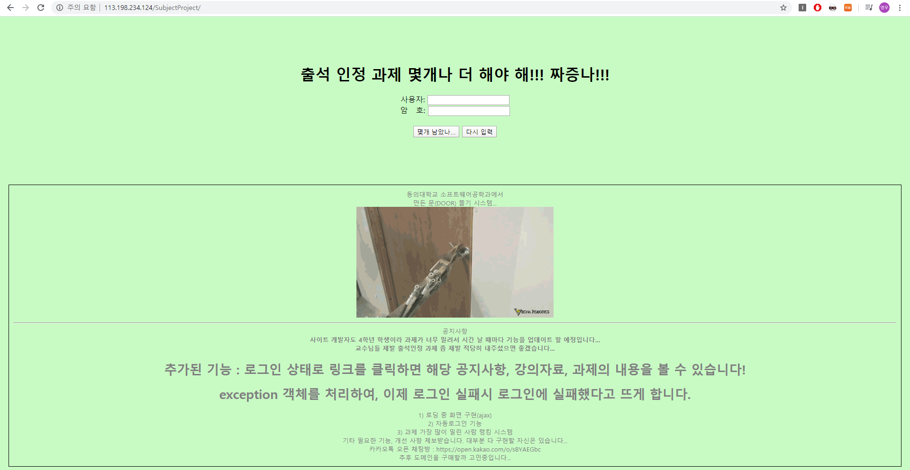
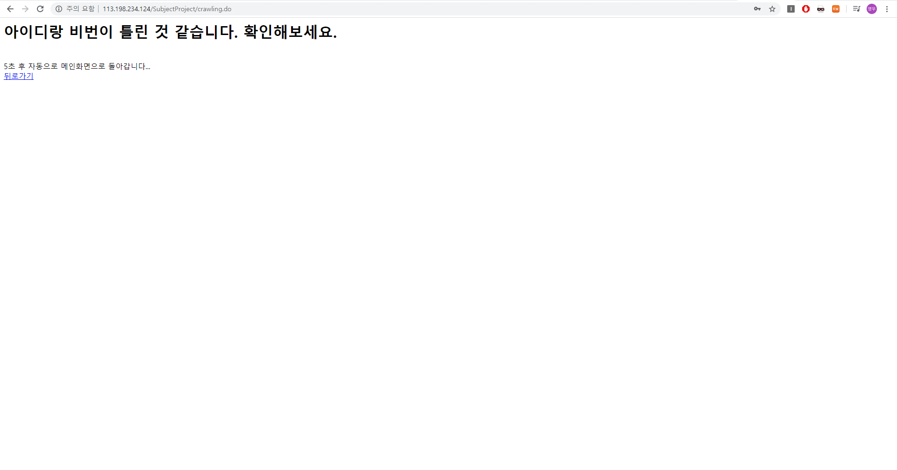
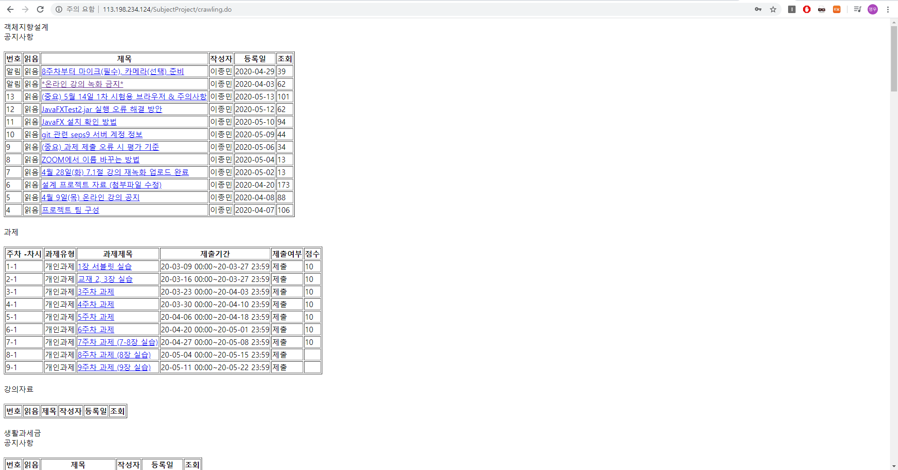
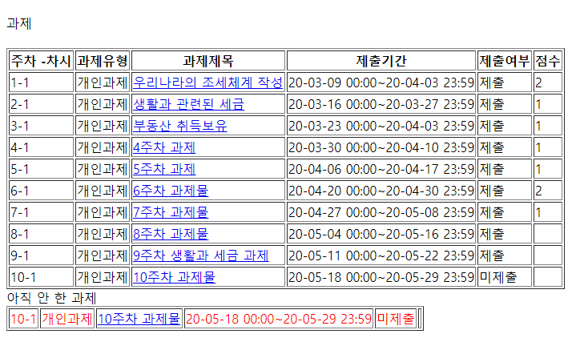

과제 모아보기 시스템
사용방법
사이트에 접속하여 door의 id와 비밀번호를 입력하고 몇 개 남았나... 버튼을 클릭합니다.
서버 부하와 자바의 연산속도에 따라서 10초 정도 걸릴 수 있습니다.

로그인에 실패하면 다음과 같은 화면이 나타납니다.

로그인 후 다음과 같은 화면이 나타나게 됩니다.

다음과 같이 아직 안 한 과제가 붉게 표시됩니다.
